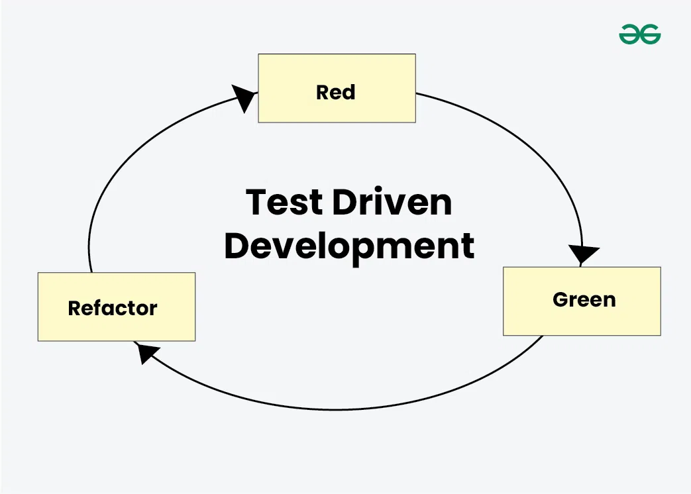

Test driven Development on tarkvaraarenduse meetod, kus enne koodi kirjutamist luuakse testid. See tagab,
et kood on alati testitud ja töökindel, vähendades vigu ning parandades kvaliteeti.
DD-s kirjutavad arendajad esmalt väikesed ja sihipärased testid soovitud funktsionaalsuse määratlemiseks,
seejärel loovad miinimumkoodi nende testide läbimiseks ning lõpuks optimeerivad koodi struktuuri ja jõudlust.

Eelised
Üksustestid annavad pidevat tagasisidet funktsioonide kohta.
Parema disainikvaliteedi tõttu on hooldus lihtsam.
Testipõhine arendus (TDD) toimib veakaitsemehhanismina.
TDD tagab, et rakendus vastab nõuetele.
TDD-l on lühike arendustsükkel.
Puudused
Suurenenud koodimaht: TDD kasutamine nõuab lisakoodi kirjutamist testjuhtumite jaoks, muutes koodibaasi suuremaks ja vähemstruktureerituks.
Vale turvatunne: Läbivad testid võivad tekitada arendajates petliku kindlustunde koodi ohutuse osas.
Hoolduskulud: Paljude testide ajakohasena hoidmine on keeruline ja aeganõudev.
Ajamahukad testiprotsessid: Testide kirjutamine ja hooldamine võtab palju aega.
Testimiskeskkonna seadistamine: TDD nõuab korralikku testimiskeskkonda, mille ülesseadmine ja haldamine nõuab lisapingutust.
Case Vahendi kasutus
Junit
Kasutatakse korratavate automatiseeritud testide kirjutamiseks ja käitamiseks.